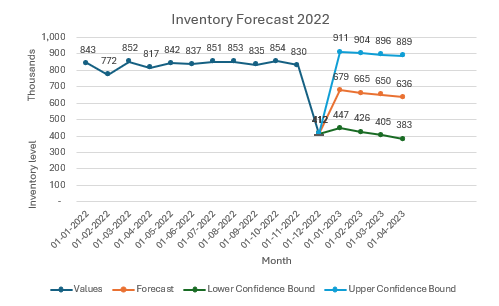
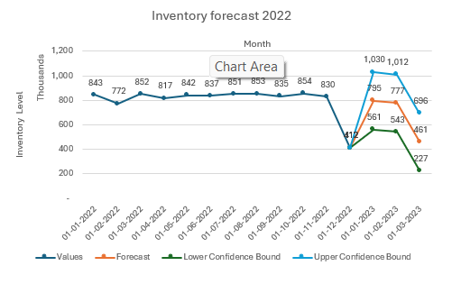
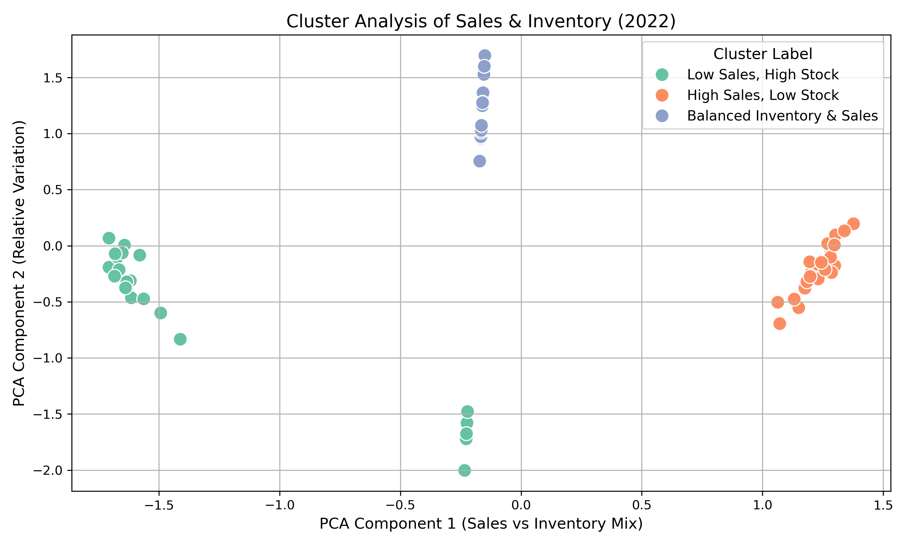
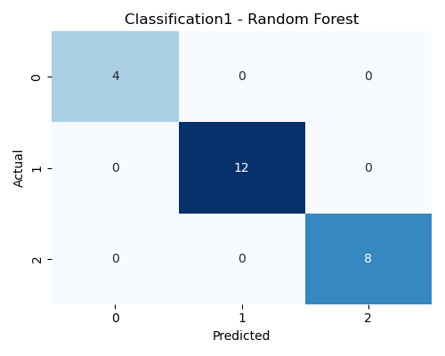

🔹 Business Problem
Retail businesses constantly struggle to balance inventory. Too much stock leads to high holding costs and blocked working capital, while too little stock causes lost sales and customer dissatisfaction. Most inventory decisions are reactive because demand patterns are not fully understood. Poor inventory decisions directly impact service levels, working capital, and profitability. This project addresses the need for a predictive, data-driven inventory intelligence system that helps businesses anticipate demand and detect inventory risks before they become costly problems.
🔹 Solution Overview
- Forecasts future demand trends
- Identifies inventory-demand imbalance patterns
- Predicts potential stockout and overstock risks
- Supports proactive, evidence-based replenishment planning
🔹 Demand Forecasting (ARIMA & SARIMA)
ARIMA and SARIMA models analyze historical sales data to identify trends and seasonal cycles in demand.


Business Contribution:
- Improves visibility of future demand
- Helps plan inventory before seasonal peaks
- Reduces emergency replenishment
- Supports stable production and supply planning
These models transform past sales data into forward-looking demand intelligence.
🔹 Inventory Pattern Discovery (Clustering Analysis)
Cluster analysis groups products based on inventory levels and Sales.

Business Contribution:
- Identifies inefficient inventory structures
- Highlights slow-moving stock with high inventory
- Detects high-demand products with low stock
- Enables targeted corrective actions
This analysis provides behavior-based inventory segmentation, improving operational visibility.
🔹 Inventory Risk Prediction (Machine Learning Classification)
A Random Forest classification model predicts inventory-demand situations such as stockout risk, overstock conditions, or balanced inventory.

Business Contribution:
- Acts as an early warning system
- Detects risk situations before financial impact
- Improves decision speed for inventory managers
- Reduces dependence on manual monitoring
This layer converts raw operational data into actionable risk signals.
🔹 Business Impact
- Reduced stockout risk
- Lower excess inventory
- Better replenishment planning
- Improved working capital efficiency
- Faster and more informed decision-making
🔹 Conclusion
This project demonstrates how combining time-series forecasting, machine learning, and clustering transforms traditional inventory management into a predictive and intelligent system. By shifting from reactive decisions to proactive planning, businesses can achieve higher service levels while controlling inventory costs.